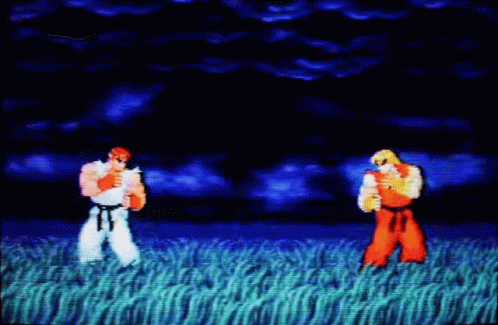

Street Fighter es una serie de videojuegos de lucha creada
por la empresa japonesa Capcom. El primer título, Street Fighter, apareció en el año 1987 en Arcade y gozó
de cierta popularidad, pero fue su continuación, Street Fighter II, la que causó una verdadera revolución y
provocó el boom de los juegos de lucha en salones recreativos. Se pusieron a la venta millones de copias en
versiones caseras para consolas por todo el mundo. Hubo múltiples versiones de esta segunda entrega, a la
que le siguieron secuelas, crossovers con personajes de franquicias como Marvel Comics o SNK, películas,
series de televisión y todo tipo de merchandising.
JUGAR}